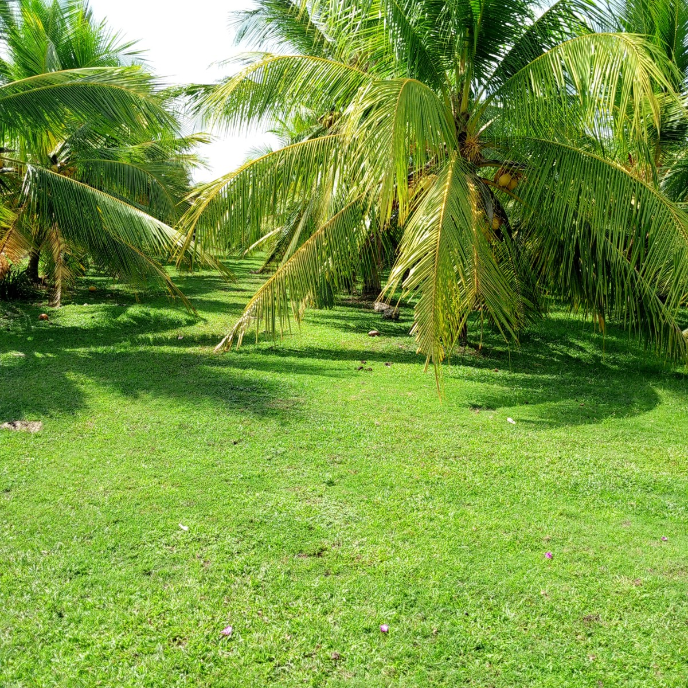
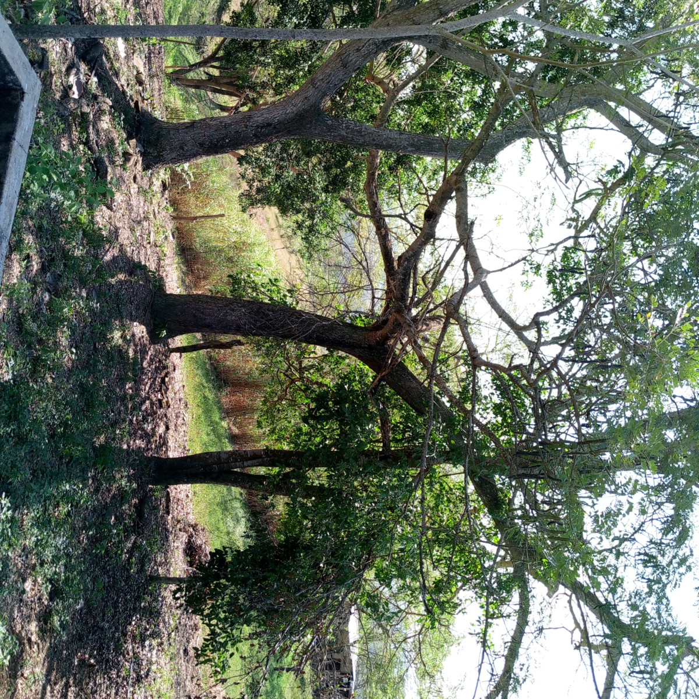
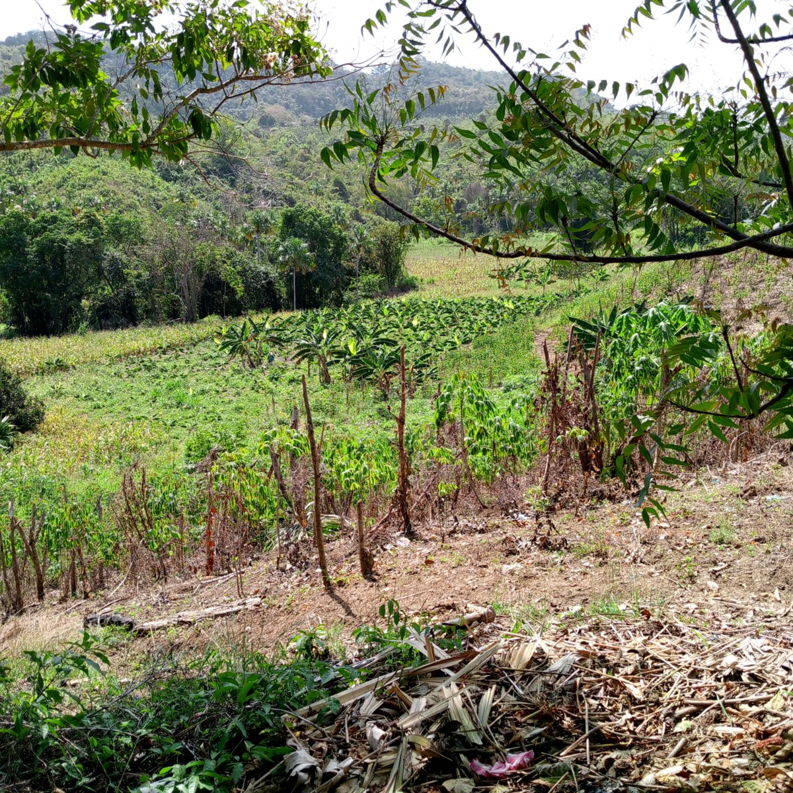

¿Qué observamos?
Lo que investigamos, publicamos y compartimos
Ganadería Sostenible
Economía Circular
Bioinsumos
Seguridad Alimentaria
Arreglos Forestales
Economía Campesina
Biodiversidad
Sistemas Silvopastoriles
Elementos
Destacados
Infografías del observatorio
Infografía
Infografía
Infografía

Financiamiento Público Verde para Agricultura Sostenible en Colombia
Trayectoria, distribución territorial y alineación con presiones ambientales de la inversión pública verde en el sector agropecuario (2011–2023).

¿Apoyar lo Verde Reduce los Rendimientos? Evaluación del Impacto Económico
Análisis de diferencias en diferencias sobre el efecto del apoyo agrícola verde vs. convencional en producción, área cosechada y rendimientos municipales.

Fondo para el Acceso a Insumos Agropecuarios (FAIA)
Propuesta de un fondo público para facilitar el acceso de pequeños productores a insumos agropecuarios sostenibles en Colombia.